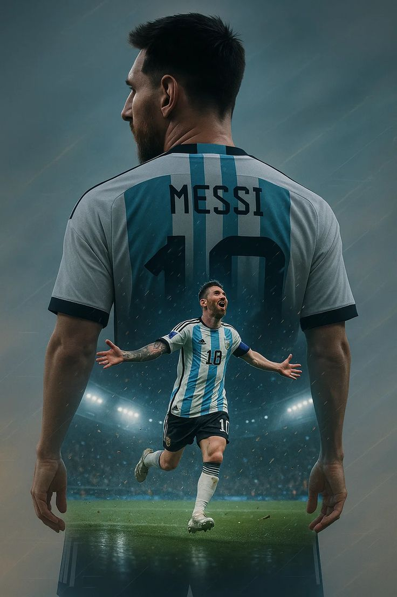
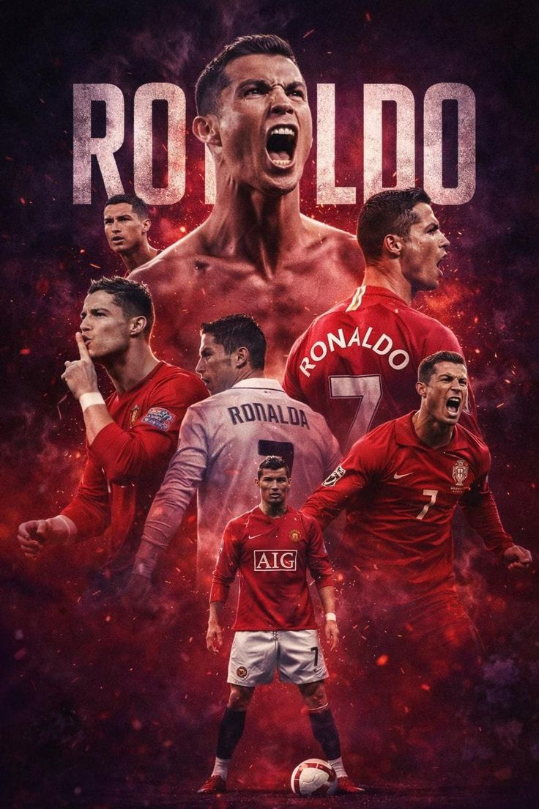
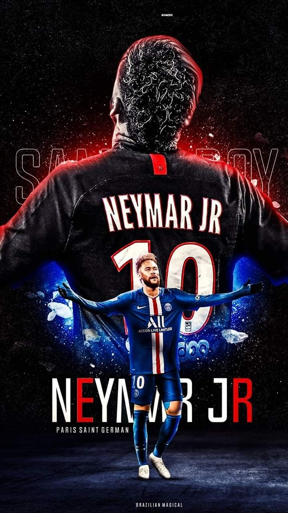
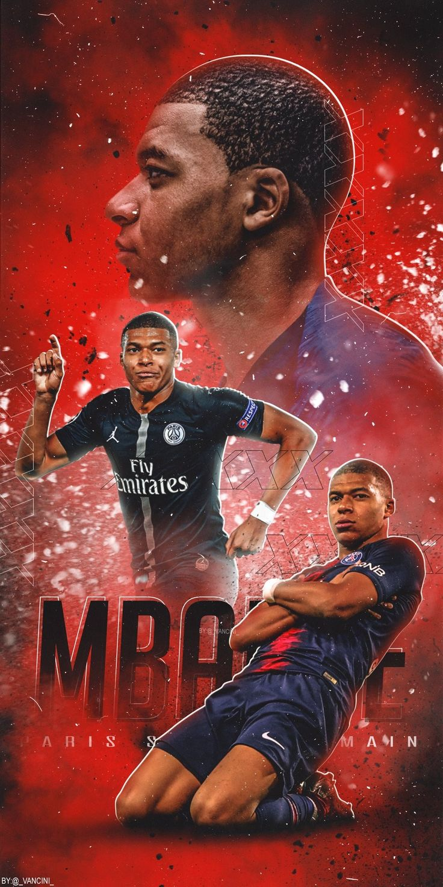
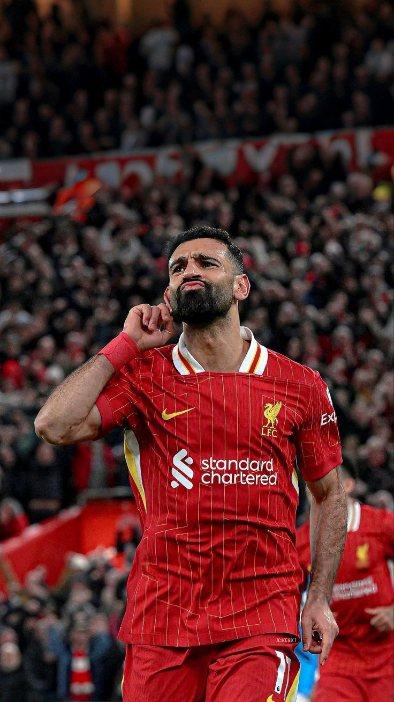
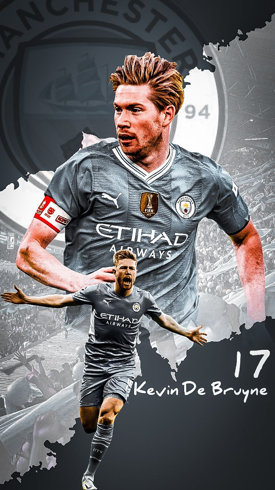
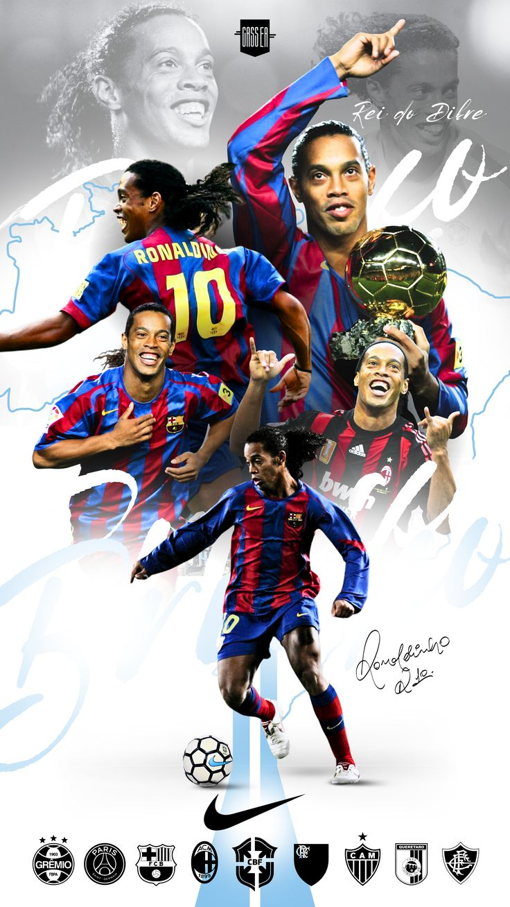
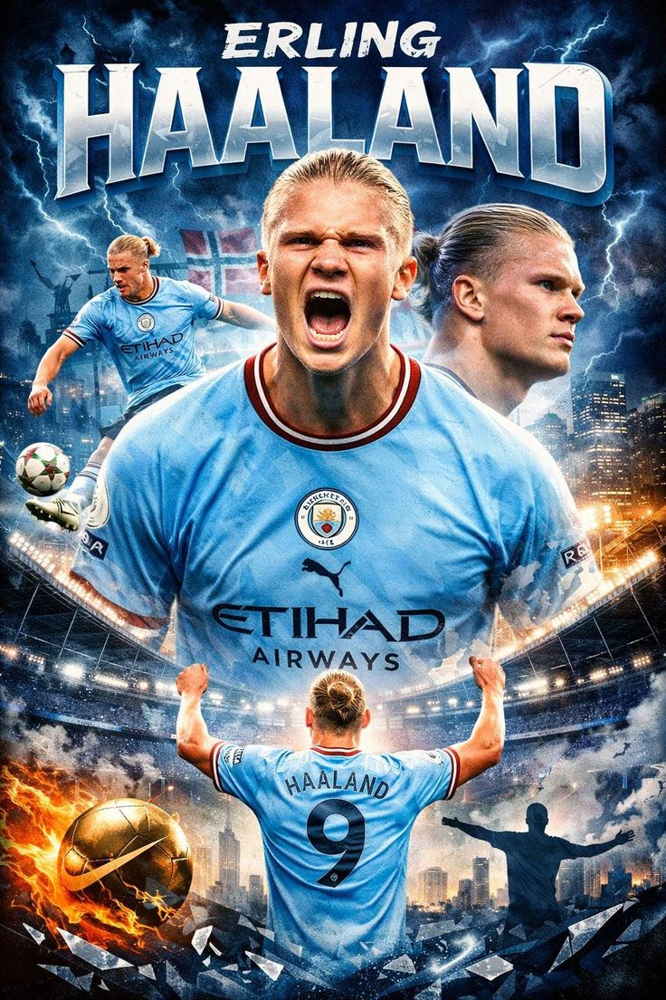
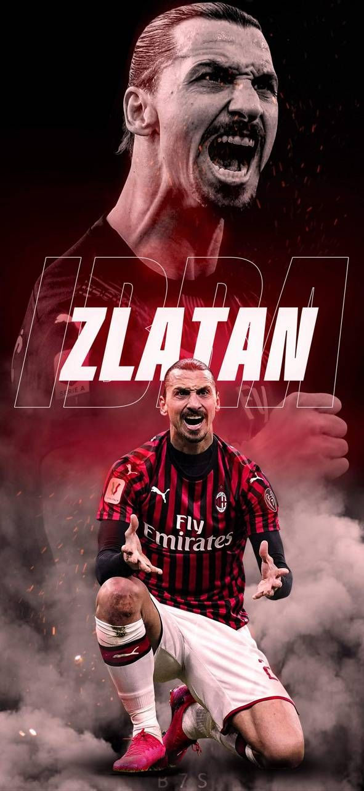

Quelques Stars du Football

Lionel Messi
Argentin, multiple Ballon d'Or et légende du FC Barcelone et PSG, Messi surnomme la Pulga, est connu pour son intelligence dans le jeu, il est a ce jour le joueur le plus titré de l'histoir du football.

Cristiano Ronaldo
Portugais, icône du Real Madrid, Juventus et Manchester United; CR7 comme l'appel les amateurs de foot, Il est connu pour sa puissance et son sens du but; il est a ce jour le meilleur buteur de l'histoir du football avec au compteur 965 buts.

Neymar Jr
Brésilien, star du PSG et talent exceptionnel du football mondial, Neymar est surtout connu par sa maitrise du ballon, sa technique dans les dribbles, un pur régale a le regarder.

Kylian Mbappé
Français, jeune prodige du PSG et champion du monde 2018, Mbappe est connu pour sa rapidité et son sens du but.

Mohamed Salah
Égyptien, buteur vedette de Liverpool avec un style rapide et précis, Mo Salah comme on l'appel est le meilleur buteur de l'histoir de son club actuel.

Kevin De Bruyne
Belge, maestro du milieu de terrain à Manchester City, Kevin est surtout connu pour son vista, son aisence dans les passes.

Ronaldinho
Brésilien, magie technique et légende du FC Barcelone, EL GAUTIO comme on le surnomme, est connu pour sa technique, ses dribbles, ses passes et surtout son sens du but.

Erling Haaland
Norvégien, buteur phénoménal de Manchester City, Erling surnomme le Cyborg est redoutable face aux buts .

Zlatan Ibrahimović
Suédois, puissance et charisme sur tous les terrains, Zlatan est surtout connu pour sa personnalité.